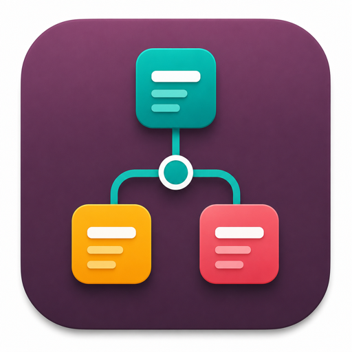
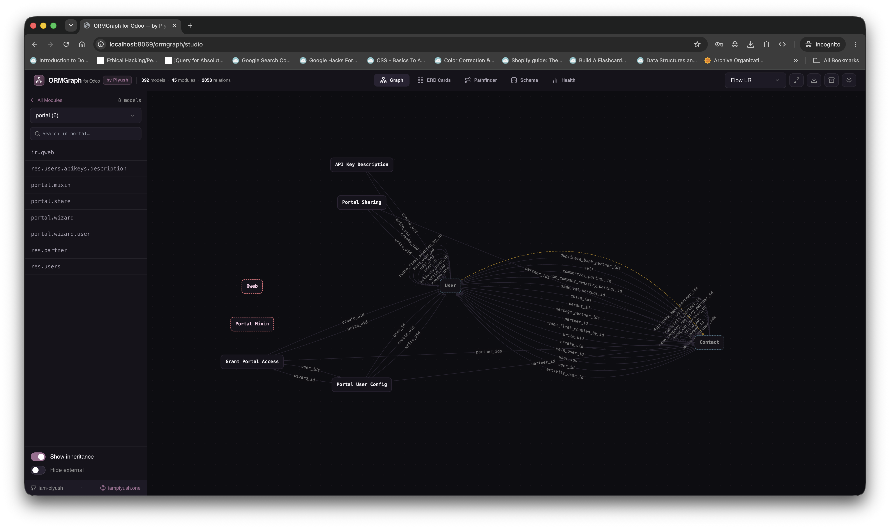
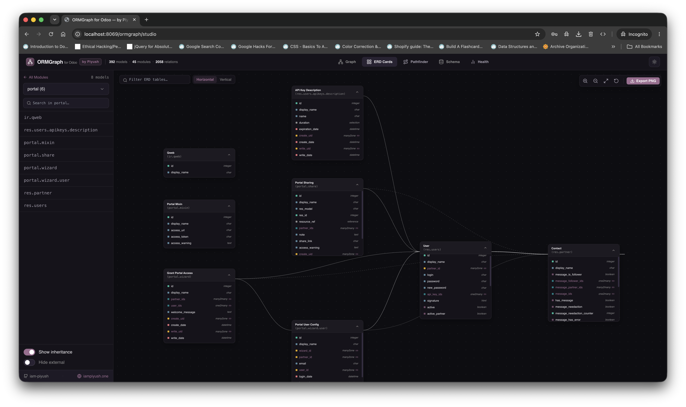
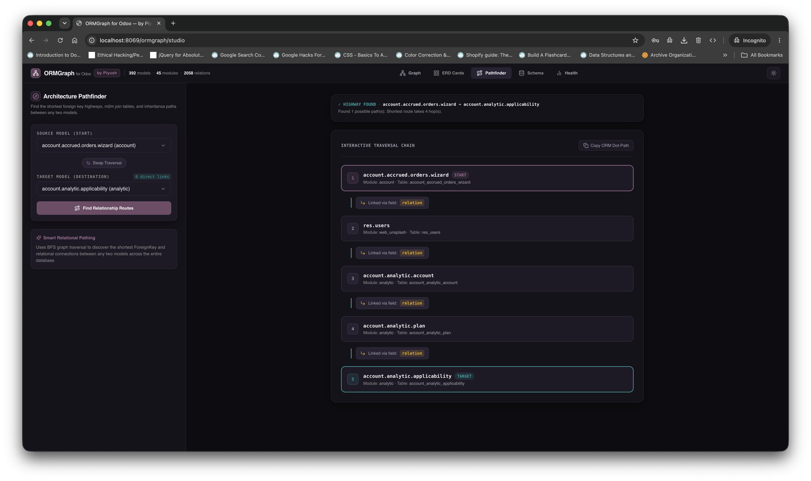
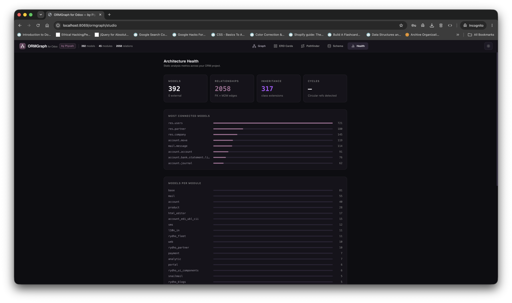
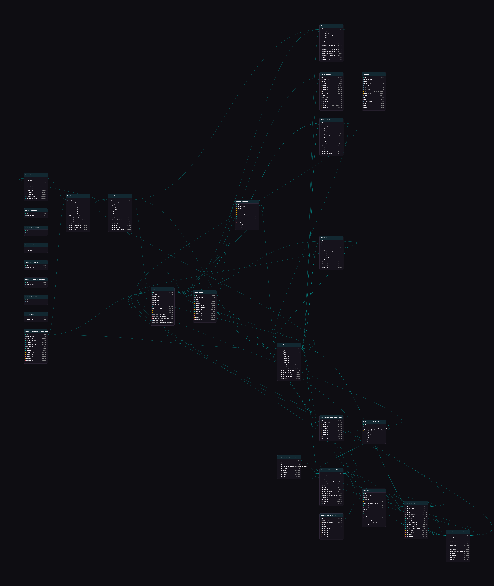

ORMGraph for Odoo
Live architecture intelligence, interactive Entity-Relationship Diagrams (ERD), and relational dependency pathfinder for Odoo developers and architects.

Zero Browser Freeze
Module-by-module isolation prevents browser crashing when analyzing databases with 600+ models.
Instant Pathfinder
Traces the exact ORM dot-path (e.g. partner_id.company_id) across multi-hop relationships.
Smart ZIP Export
Auto-partitions complex modules into high-res PNG sub-clusters bundled inside a clean ZIP archive.
See ORMGraph in Action
Click below to watch the live studio walkthrough on YouTube.
Visual Feature Tour
Click any feature tab on the left to explore screenshots of the studio.
1. Zero-Lag Studio Workspace
Opens with a clean, responsive slate. Search or pick any installed Odoo module from the sidebar to inspect its architecture immediately.
2. Structural Architecture Graph
Cytoscape-powered high-performance graph with multiple layout algorithms (Hierarchy, Flow, Organic). Visualizes model inheritance and foreign connections.

3. Interactive ERD Schema Cards
Table cards with color-coded badges for relational fields (Many2one, One2many, Many2many), compute status, and selection types with drag & zoom.

4. BFS Relational Pathfinder
Calculates the shortest relational route between any two database models and generates 1-click ORM dot-notation code (e.g. partner_id.currency_id.symbol).

5. Architecture Health & Diagnostics
Analyzes database schema complexity, flags circular dependencies, detects isolated orphan models, and calculates degree centrality.

6. High-Resolution ERD Table Card Export
Export presentation-ready PNG diagrams of your database tables or automatically partition large modules into clustered ZIP bundles.

7. High-Resolution Architecture Graph Export
Download full-vector Cytoscape graph diagrams with automatic metadata watermarking, perfect for technical architecture documentation.

Help Us Make ORMGraph Better
ORMGraph is a 100% free and open-source project built for the entire Odoo developer community. Whether you want to report a bug, suggest new graph algorithms, or submit improvements — your contributions are warmly welcomed!
Open For PRs
Clone, fork, and build custom features directly on GitHub.
Quick Start (3 Simple Steps)
Place ormgraph_odoo in your addons path, update apps list, and click Install.
Open ORMGraph Studio from the main app switcher or the smart button on any Technical Model form.
Select any module to inspect graphs, review ERDs, trace paths, and export high-res PNG/ZIP bundles.